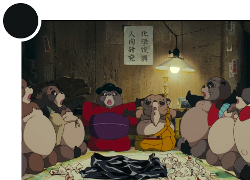
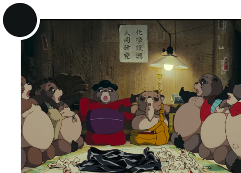

TANUKI
Raccoon with the ability to shapeshift
Tanuki are a kind of yōkai (supernatural beings) found in the classics and in the folklore and legends of various places in Japan, ommonly associated with the Japanese raccoon dog. In some regions of Japan, tanuki are reputed to have abilities similar to those attributed to kitsune (foxes): they can shapeshift into other things or people, and can possess human beings. Tanuki are also said to drum on their bellies, making sounds such as "pom poko" or "ponpon", and typically depicted as having a big scrotum or large bellies.
Text from en.wikipedia.org/wiki/Bake-danuki

Tsukioka Yoshitoshi, Tanuki, undefined date
 Implicit reference
Implicit reference
 Explicit reference
Explicit reference


 
